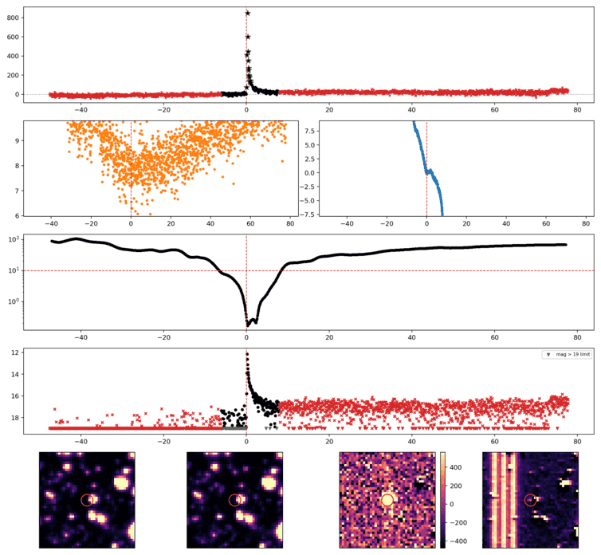
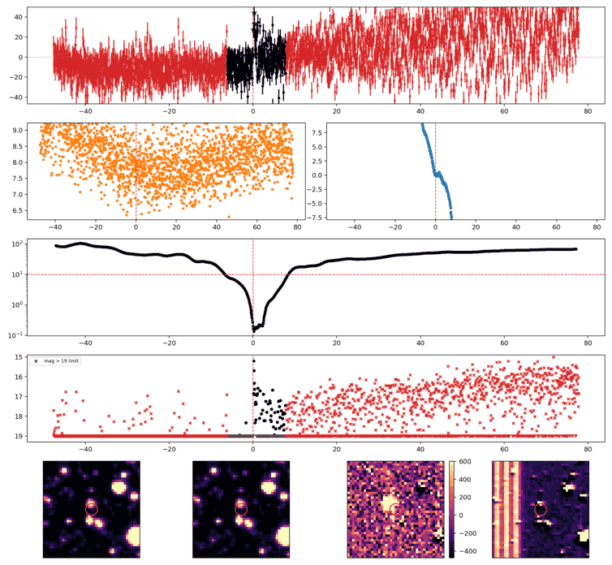

Search centered on refined position (343.1402097, +80.4506333 deg). Gaia coordinates are at J2016.0; proper motions are shown, without epoch propagation. A positional match does not change the candidate flags.
No Gaia DR3 sources found within 5 arcseconds.
Retrieved 2026-10-22T18:29:12.396663+00:00
Representative chosen by category, detection count, then Gaussian S/N. Original measurements and classifications are retained below.
